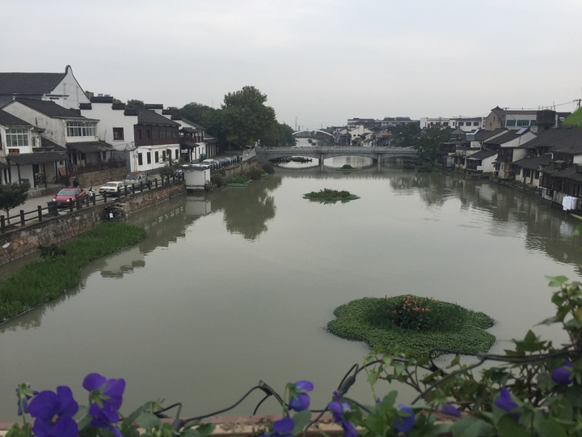
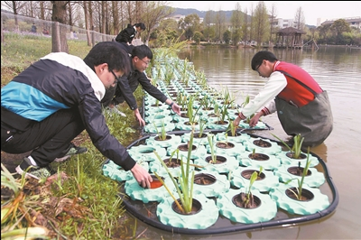
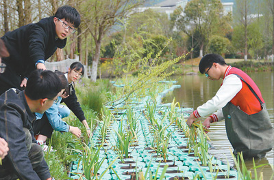
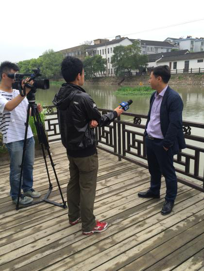
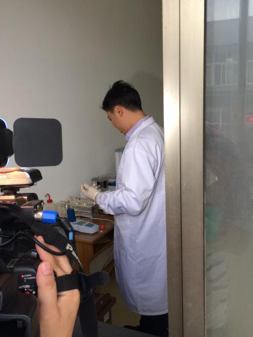
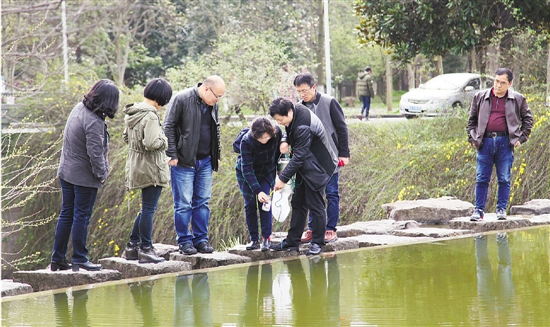

最新资讯
乌镇：重塑“水乡之魂”
浙江日报-浙江新闻客户端记者 宋彬彬 市委报道组 张潘丽 通讯员 石莹 更新时间：2016-11-14 06:46

“你看，那些美人蕉开得多艳丽！咱乌镇的水越发清澈了，下河游泳的人也多起来了，又恢复到了我们童年记忆中河水的样子。”11月13日，站在乌镇市河的大桥上，老乌镇人金迎新感慨不已。顺着他手指的方向望去，一条绵延几公里的乌镇市河上，净化水体的绿色浮岛错落有致，河道保洁员乘着小船来回巡查，枕水而居的民宿也逐渐修缮起来。桐乡市委托第三方每个月进行的水质考核监测结果显示，乌镇的239条河道常年保持着Ⅲ类水标准。 乌镇市河由南往北贯穿景区，是乌镇的母亲河，沿岸的民宿、饭店众多，过去由于生活污水的排入，加上航运带来的泥沙淤积，不仅水质差且治理难。乌镇镇农经中心提供的一份数据显示，2013年1月至10月，乌镇市河监测断面处的水质监测结果为劣五类水。污染在水里，根子在岸上。2014年开始，乌镇市河迎来全面整治，一手开展清淤疏浚，一手抓截污纳管，有效控制了河道污染源的排放。 治水要标本兼治。据乌镇镇副镇长费明强介绍，乌镇市河治理还向高校借智，融入了科学生态治水的理念。从2015年6月开始，乌镇治水的队伍又添新力量，浙江农林大学副教授曹玉成带着学生与乌镇合作，实施乌镇市河生态修复工程，通过设置5个生态围堰，将乌镇镇区所有水系包括入内形成大包围，开展乌镇市河的区域治水。他们在河道中设置生物膜，安装太阳能增氧设备，投加高效微生物菌剂，还安装生态浮床，建起3600平方米的水生植物景观绿化。经过一年多的努力，河道水质控制在Ⅲ类，水体透明度达到50厘米以上。 “上次我们学生把一个生态浮床打捞起来后，看到底下有很多的黄鳝、泥鳅。”曹玉成说，当水中的生物种类越多，河道的自净能力就越强，他希望更多的河道能通过生态治理恢复自我净化和修复能力，这是一种治本之策。如今，曹玉成每天都守在乌镇市河边，采集河水进行实时监测，发现问题立即处置。 水质不断提升的背后，折射出乌镇人不断凸显的环保意识。过去，养殖业带来的面源污染是乌镇治水的难点，随着乌镇市河这样的样板河越来越多，加上世界互联网大会的红利效应凸显，许多居民自发地拆除猪舍鸭棚，从事旅游等产业。“鸭司令”傅生荣就是其一。傅生荣曾在乌镇东邱港岸边养了30多年的鸭子，后来，他拆除了鸭棚，投入100多万元搞起农家乐，在他的带动下，曾经鸭舍密布、臭气熏天的东邱港如今已是水清岸绿，引得宾客纷至沓来。 乌镇的水质越来越好，更多高颜值的河道展现在大家眼前，也吸引了许多投资者。乌镇市河两边新开了一批民宿、商铺，还引来乌镇互联网医院、乌镇街等一大批互联网项目落地。西北角处，废弃多年的北栅丝厂也被客商利用起来，改造成浙江阿特多多知识产权交易中心项目。 “治水都治出了职业病，见到河就要看一眼才放心。”费明强说，负责治水这项工作，最高兴的就是看到水质变好。他相信，通过大家的共同努力，未来乌镇河道的水质将越来越好，让一汪清水重塑“水乡之魂”。
高校生态科技助力水污染处理
记者：陈胜伟 更新时间：2015-01-21 14:03:17

日前，浙江农林大学环境工程专业师生在临安市锦北街道东湖设置生态浮床，种植能净化水质的水生植物，探索用高校生态科技助力水污染处理，达到改善水环境的目的。陈胜伟 摄
治水新招
记者：陈胜伟 更新时间：2015-01-21 14:03:17

近日，浙江农林大学环境工程专业的师生，在位于浙江省临安市锦北街道的东湖里设置生态浮床，并在浮床里种植具有净化水质能力的水生植物，利用水生植物和生态浮床中的特殊基质共同作用，处理水污染，改善水环境，探索用高校生态科技助力“五水共治”和剿灭劣五类水。陈胜伟摄（人民视觉）
浙江卫视专访
更新时间：2017-04-17 14:03:17


日前，浙江卫视针对桐乡市乌镇镇市河生态修复工程进行专访
首席顾问 助力剿劣
通讯员 陈胜伟 摄

3月25日，浙江农林大学的科技特派员们，跟着省“剿灭劣V类水”行动首席技术顾问、浙江农林大学教授曹玉成（左五）学习如何科学采集水样。 当天，浙江农林大学举行科技特派员助力“剿灭劣V类水”行动出征仪式，该校师生将采取多种形式参与到全省剿灭劣V类水的工作中去，贡献自己的力量。通讯员 陈胜伟 摄